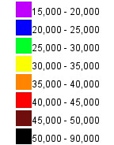

 
<!doctype html>
<html lang="en">
    <head>
        <meta charset="utf-8">
        <meta http-equiv="X-UA-Compatible" content="IE=edge">
        <meta name="viewport" content="initial-scale=1,user-scalable=no,maximum-scale=1,width=device-width">
        <meta name="mobile-web-app-capable" content="yes">
        <meta name="apple-mobile-web-app-capable" content="yes">
        <link rel="stylesheet" href="css/leaflet.css"><link rel="stylesheet" href="css/L.Control.Locate.min.css">
        <link rel="stylesheet" href="css/qgis2web.css"><link rel="stylesheet" href="css/fontawesome-all.min.css">
        <link rel="stylesheet" href="css/leaflet-measure.css">


        
        <link rel="stylesheet" href="lib/opacity/Control.Opacity.css" />

        <link rel="stylesheet" href="lib/jquery/jquery-ui-1.10.3.custom.min.css" />
        <style>
        html, body, #map {
            width: 100%;
            height: 100%;
            padding: 0;
            margin: 0;
            background-color: rgb(0, 0, 0);
        }
        img{
 max-width: 100%;
 max-height: 100%;
 }

        </style>
        <title></title>
    </head>
    <body>
        <div id="map">
        </div>
        <script src="js/qgis2web_expressions.js"></script>
        <script src="js/leaflet.js"></script><script src="js/L.Control.Locate.min.js"></script>
        <script src="js/leaflet.rotatedMarker.js"></script>
        <script src="js/leaflet.pattern.js"></script>
        <script src="js/leaflet-hash.js"></script>
        <script src="js/Autolinker.min.js"></script>
        <script src="js/rbush.min.js"></script>
        <script src="js/labelgun.min.js"></script>
        <script src="js/labels.js"></script>
        <script src="js/leaflet.wms.js"></script>
        <script src="js/leaflet-measure.js"></script>
        <script src="js/proj4.js"></script>
        <script src="js/proj4leaflet.js"></script>
        <script src="js/mmlLayers.js"></script>
        <script src="https://unpkg.com/togeojson@0.16.0"></script>
        <script src="https://unpkg.com/leaflet-filelayer@1.2.0"></script>
        <script src="lib/opacity/Control.Opacity.js"></script>
        <script src="lib/jquery/jquery-1.9.1.js"></script>
        <script src="lib/jquery/jquery-ui-1.10.3.custom.min.js"></script>
        <script>
        var crs = new L.Proj.CRS('EPSG:3067', '+proj=utm +zone=35 +ellps=GRS80 +towgs84=0,0,0,0,0,0,0 +units=m +no_defs', {
            resolutions: [2800, 1400, 700, 350, 175, 84, 42, 21, 11.2, 5.6, 2.8, 1.4, 0.7, 0.35, 0.14, 0.07],
        });
        var map = new L.map("map", {
  crs: L.TileLayer.MML.get3067Proj()
}).setView([67.6, 24.3], 10);
        var hash = new L.Hash(map);
        map.attributionControl.setPrefix('<a href="https://github.com/lizardtechblog/Leaflet.OpacityControls/blob/master/LICENSE.md" target="_blank">OpacityControls</a> &middot;<a href="https://github.com/makinacorpus/Leaflet.FileLayer/blob/master/LICENSE" target="_blank">Leaflet.FileLayer</a> &middot;<a href="https://github.com/placemark/togeojson/blob/main/LICENSE" target="_blank">toGeojson</a> &middot;<a href="https://github.com/tomchadwin/qgis2web" target="_blank">qgis2web</a> &middot; <a href="https://leafletjs.com" title="A JS library for interactive maps">Leaflet</a> &middot; <a href="https://qgis.org">QGIS</a>');
        var autolinker = new Autolinker({truncate: {length: 30, location: 'smart'}});
        L.control.locate({locateOptions: {maxZoom: 10, showCompass:true, watch:true, maxZoom:10, maximumage:5000, enablehighaccuracy:true}}).addTo(map);
        var measureControl = new L.Control.Measure({
            position: 'topleft',
            primaryLengthUnit: 'meters',
            secondaryLengthUnit: 'kilometers',
            primaryAreaUnit: 'sqmeters',
            secondaryAreaUnit: 'hectares'
        });
        measureControl.addTo(map);
        document.getElementsByClassName('leaflet-control-measure-toggle')[0]
        .innerHTML = '';
        document.getElementsByClassName('leaflet-control-measure-toggle')[0]
        .className += ' fas fa-ruler';
        var bounds_group = new L.featureGroup([]);
        function setBounds() {
        }
        map.createPane('pane_rinnejyrkkyyskasivarsi_1');
        map.getPane('pane_rinnejyrkkyyskasivarsi_1').style.zIndex = 800;
        var layer_rinnejyrkkyyskasivarsi_1 = L.WMS.layer("http://laurinkartat.duckdns.org:8080/geoserver/ows?version=1.3.0", "rinnejyrkkyys", {
            pane: 'pane_rinnejyrkkyyskasivarsi_1',
            format: 'image/png',
            uppercase: true,
            transparent: true,
            continuousWorld : true,
            tiled: true,
            info_format: 'text/html',
            opacity: 1,
            identify: false,
            attribution: '',
        });
        map.addLayer(layer_rinnejyrkkyyskasivarsi_1);
        map.createPane('pane_huiput_1');
        map.getPane('pane_huiput_1');
        var layer_huiput_1 = L.WMS.layer("http://laurinkartat.duckdns.org:8080/geoserver/ows?version=1.3.0", "cite:huiput1000m", {
     opacity:1.0,
        });
     map.addLayer(layer_huiput_1);


    map.createPane('pane_maastokartta_1');
    map.getPane('pane_maastokartta_1').style.zIndex = 200;
    var layer_maastokartta_1 = L.tileLayer.mml_wmts({ layer: "maastokartta", apiKey: 'b7a367ca-d9e8-484a-9d32-b5f10999aedc', opacity: 0.6 });
    map.addLayer(layer_maastokartta_1);


map.createPane('pane_ortokuva_2');
        map.getPane('pane_ortokuva_2').style.zIndex = 201;
        var layer_ortokuva_2 = L.tileLayer.mml_wmts({ layer: "ortokuva", apiKey: 'b7a367ca-d9e8-484a-9d32-b5f10999aedc' });
       var abstract = new L.Control({'position':'topright'});
            abstract.onAdd = function (map) {
                this._div = L.DomUtil.create('div',
                'leaflet-control abstract');
                this._div.id = 'abstract'
                    
                    
                    this.hide();
                    return this._div;
                };
                abstract.hide = function () {
                    this._div.classList.remove("abstractUncollapsed");
                    this._div.classList.add("abstract");
                    this._div.innerHTML = 'i';
                    this._div.setAttribute("onclick", "abstract.show()");
                }
                abstract.show = function () {
                    this._div.classList.remove("abstract");
                    this._div.classList.add("abstractUncollapsed");
                    this._div.innerHTML = '';
                    this._div.setAttribute("onclick", "abstract.hide()");
            };
            abstract.addTo(map);

        var baseMaps = {"Maastokartta":layer_maastokartta_1,
                        "Ortokuva":layer_ortokuva_2
};
        L.control.layers(baseMaps,{
            "Terrain steepness": layer_rinnejyrkkyyskasivarsi_1,
            "Peaks over 1000m":layer_huiput_1
        }).addTo(map);
        L.Control.fileLayerLoad({
        // Allows you to use a customized version of L.geoJson.
        // For example if you are using the Proj4Leaflet leaflet plugin,
        // you can pass L.Proj.geoJson and load the files into the
        // L.Proj.GeoJson instead of the L.geoJson.
        layer: L.geoJson,
        // See http://leafletjs.com/reference.html#geojson-options
        layerOptions: {style: {color:'red'}},
        // Add to map after loading (default: true) ?
        addToMap: true,
        // File size limit in kb (default: 1024) ?
        fileSizeLimit: 10240,
        // Restrict accepted file formats (default: .geojson, .json, .kml, and .gpx) ?
   
    }).addTo(map);

        var opacitySlider = new L.Control.opacitySlider();
        map.addControl(opacitySlider);
        opacitySlider.setOpacityLayer(layer_rinnejyrkkyyskasivarsi_1);
        
        //Set initial opacity to 0.5 (Optional)
            layer_rinnejyrkkyyskasivarsi_1.setOpacity(0.35);
        
        setBounds();
        </script>
    </body>
</html>
